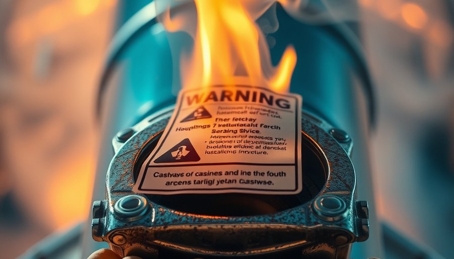

默沙东诊疗手册把坚果列在高草酸食物条目下。上海卫健委的科普文章里，腰果出现在应少吃的清单中。广东疾控的数据更具体：烤腰果草酸含量约262mg/100g。一个每天早晚抓一把坚果的人，草酸负荷确实不低。
看到这些信息，最自然的反应是：把它戒了。黑名单的逻辑到此为止。有风险，就别碰。它把262mg/100g这个密度值，直接翻译成一枚有毒的印章。但医学的语言是连续的：262mg是一个浓度，不是一个判决。它告诉你每百克有多少草酸，没有告诉你吃多少克、隔多久吃、配什么吃。这三个变量才是决定风险的关键。
在健康咨询里，类似的问题反复出现：体检发现结节，立刻戒掉所有豆制品；尿酸偏高，把海鲜和蘑菇全部拉黑。每一次，信息传播都完成了同一件事：把有影响翻译成不能吃。
草酸的问题在于，它容易和钙结合形成草酸钙结晶，这是大多数肾结石的成分。但结合的位置很关键。如果草酸在肠道里就遇到了钙，它们会提前结合，然后随粪便排出体外。这样一来，进入血液和尿液的草酸量反而降低了。
所以吃腰果时配一口牛奶或酸奶，不是自我安慰。钙在肠道里拦截草酸，是生理学上确认的减害机制。上海市卫健委的同一篇科普也提到了这一点：适量摄入富含钙的食物，有助于减少草酸的吸收。
剩下的风险还可以用另外两个变量管理。一是频率：不必每天吃，更不必每天多次吃。隔天吃一次，每次一小把，约20到30克，就能避免形成持续的高剂量草酸来源。二是水分：吃了坚果的那天，有意识地多喝水，稀释尿液，降低草酸钙析出结晶的概率。
戒掉腰果，是把一个可以拆解的风险锁进了吃或不吃的二元开关。而配奶、减量、补水，是把风险还原成三个可以分别调节的旋钮。
健康传播里有一个熟练的公式：挑出一样食物，给一个高字，配一份名单，然后收进忌口栏。这个公式对内容创作者效率极高。黑名单比剂量表好记，恐吓比解释好传播。
但它有代价。凡是被收进名单的食物，都被剥夺了剂量、频率和搭配这三个变量，只剩下吃或不吃两种选择。把连续量压成二元，是健康信息在传播环节的降维。丢失的恰好是最有用的部分。
更大的代价在餐桌之外。一个人如果反复听到这个不能吃、那个要忌口，饮食清单就会慢慢变成恐惧清单。而完全禁食某种食物，恰恰是最容易半途而废的方案。一旦破戒，往往不是回到适度，而是直接放弃所有管理。清教式的健康观制造的不是自律，是摇摆：在苦行和放纵之间来回，没有中间状态。
广东疾控的数据里还有一个容易被忽略的细节：腰果的草酸含量是262mg/100g，但不同加工方式的腰果草酸含量有差异，而且草酸含量高的食物名单上远不止腰果。如果每一样都戒，普通人最后能吃的东西会越来越少。真正稀缺的不是知道什么有毒，而是一种既认真对待风险、又不把食物当敌人的中间状态。
剂量思维不是无限制吃的许可证。对于已经确诊高草酸尿症、或反复形成草酸钙结石的人，医生可能会建议更严格的草酸限制。广东疾控也提醒，结石患者应在医生或营养师指导下调整饮食。个体差异是真实存在的，一套固定的安全剂量并不适用于所有人。
但大多数把腰果当零食的人，并不在这个极端区间。对他们来说，一份可持续的调整方案，远好过一张不可持续的禁食清单。具体可以这样做：
隔天吃一次，每次一小把，约20到30克，避免每天多次、持续高剂量摄入。
吃的时候配点牛奶或酸奶，利用钙在肠道提前结合草酸。
当天多喝水，稀释尿液，降低结晶风险。
这三条的核心不是划定什么不能碰，而是让腰果变成可以被管理的食物。把恐惧换成分寸。
当一个人的饮食清单里充满了被点名的食物，最稀缺的不是知道什么有毒，而是在被点名之后，还能不能好好吃饭。这个问题没有标准答案，但方向是清楚的：不是把清单越列越长，而是把每一种食物都还原成可以调节的剂量、频率和搭配。
尾声
结石越大，越不疼。食物风险越被点名，越容易被误读成禁食令。身体侧的沉默和生活侧的清单，合起来是同一个故事：信息一旦被简化，丢失的恰好是最有用的部分。
小汪老师的成长观察笔记